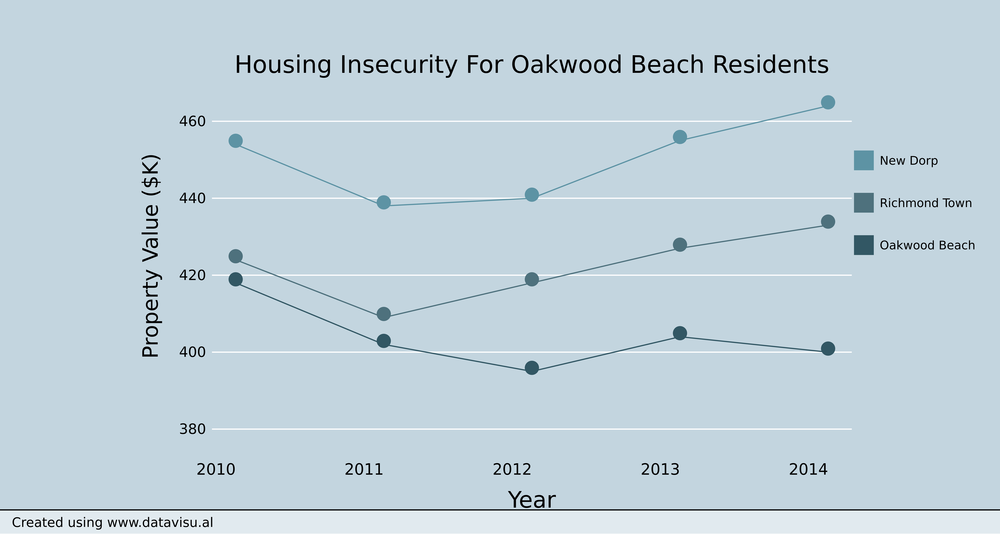

At its peak, Hurricane Sandy, the largest Atlantic hurricane on record, spanned over 1,150 miles - roughly the driving distance between New York and Miami. As it began nearing the coastline, pouring down rain and rattling windows, schools closed, public transit shut down, and flood-zone residents evacuated their homes. The full force of the storm hit New York City on October 29, 2012, with winds gusting to 80 miles per hour.
Oakwood Beach, a low-lying hamlet on the south shore of Staten Island, was no match for the superstorm. By the time the winds and waters receded, leaving mud-filled homes in their wake, three residents were dead. Dozens more would be homeless for months.
During the year that followed, some residents chose to return and rebuild. But now, two years since the storm, the state is in the midst of implementing a buy-out program designed to convince all residents to leave their homes. Officials have closed on 276 buy-out sales in Oakwood Beach and two nearby towns, at a cost of $112 million; another 200 applications are pending.
In Oakwood Beach, once an oceanfront sanctuary for working class families, just a handful of stubborn holdouts remain. They live among empty lots and boarded windows; 47 neighborhood houses have already been demolished.
We visited Oakwood Beach around Sandy’s anniversary to talk to the remaining residents. They are surrounded: by nature, as animals and wetlands reclaim the land, and by government, as officials prepare for a world in which Oakwood Beach no longer exists. For now, the town sits in limbo.
3
Deaths in Oakwood Beach as a result of the storm.
One man drowned, and two were crushed by debris in their basement.

496
Staten Island residents who have filed applications to sell their homes through New York State's buyout program.

276
Staten Island buy-out sales that have closed.

112,000,000
Dollar value of the Staten Island sales that have closed.

47
Houses that have already been demolished in Oakwood Beach.

Barbara Brancaccio
Spokeswoman for the Governor's Office of Storm Recovery
"Basically every time it rains, this place essentially goes deeper and deeper into the bay. And it's unlivable."

Roy Nelson
Sanitation worker
"The house was devastated, but we were back in by Super Bowl Sunday. We had no choice. I killed myself doing the work: I lost 30 lbs, I was getting four hours of sleep. You realize all the little stuff you accumulate in your life. You think it’s pennies, but it’s $10,000."
Ahmed
Age 13
"My house was fully destroyed, and it was slanted. Inside, everything got destroyed. From the ceiling to the dirt marks there was only two inches. We saved nothing but my PlayStation. "

Antonina
Age 11
"We’re moving but we don’t want to move because we were born here. We used to go down the beach and pick seashells and decorate them. Now there’s a lot of animals here. Stray cats. We took care of one. My aunt has it now."
Ahmed
Age 13
"Yesterday I was coming home from school and I found a deer coming to me like this [head-on]. It got scared away when my mom closed the door."

Daniel
Age 9
"They’re going to make something out of this when all the houses are down, like a park. Because someone wanted a park."

Gregory Epshteyn
Restaurant owner
"I can't get this kind of space in other neighborhoods. This is a million dollar house. When the state allows me to get this kind of house somewhere else, then maybe I'll leave."
